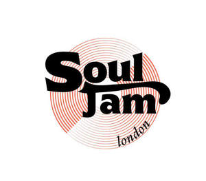

Trade Mark Journal No.2025/013 28 March 2025
UK00004173783 14 March 2025 (35,41)

- Class 35
- Promotion [advertising] of concerts; Display services for merchandise; Promoting the sale of fashion goods through promotional articles in magazines; Sales promotions at point of purchase or sale, for others; Advertising services to promote the sale of beverages; Inventorying merchandise; Promoting the sale of goods and services of others through promotional events; Customer club services, for commercial, promotional and/or advertising purposes; Organization of events, exhibitions, fairs and shows for commercial, promotional and advertising purposes; Merchandising; Product merchandising; Publicity and sales promotion; Promoting the sale of goods and services of others through the distribution of printed material and promotional contests; Organization of fashion parades for sales promotion purposes; Customer loyalty services for commercial, promotional and/or advertising purposes; Publicity and sales promotion services; Promotion of musical concerts; Sales promotion; On-line trading services in which seller posts products to be auctioned and bidding is done via the Internet; Trade marketing [other than selling]; Advertising and promotional services; Promotional and advertising services; Promotional advertising services; Promotion, advertising and marketing of on-line websites; Advertising services relating to the sale of goods; Retail services connected with the sale of clothing and clothing accessories; Promotion of goods and services through sponsorship of international sports events; Advertising, promotional and marketing services; Advertising, marketing and promotional services; Marketing, advertising, and promotional services; Modelling for advertising or sales promotion; Carrying out auction sales; Promotional marketing; Organisation of exhibitions and trade fairs for commercial and advertising purposes; Organisation of exhibitions and trade fairs for commercial or advertising purposes; Fashion show exhibitions for commercial purposes; Promotion of goods and services through sponsorship of sports events; Brand creation services (advertising and promotion); Organisation of exhibitions and trade fairs for business and promotional purposes; Product merchandising for others; Organisation of trade fairs and exhibitions for commercial or advertising purposes; Organisation of exhibitions or trade fairs for commercial or advertising purposes; Advertising services for the promotion of beverages; Publicity and promotional services; Organisation of customer loyalty programs for commercial, promotional or advertising purposes; Retail of third-party pre-paid cards for the purchase of clothing; Promotion of goods and services through sponsorship; Organization of exhibitions and trade fairs for commercial or advertising purposes; Promotion [advertising] of business; Online retail store services in relation to clothing; Mediation of contracts for purchase and sale of products; Sales promotion for others; Online retail store services relating to clothing; Organization of fairs and exhibitions for commercial and advertising purposes; Modeling for advertising or sales promotion; Distribution of advertising, marketing and promotional material; Fashion shows for promotional purposes (Organization of -); Organization of fashion shows for promotional purposes; Advertising and publicity; Publicity and advertising; Advertising automobiles for sale by means of the Internet; Sales promotion services; Advertising of cinemas; Business merchandising display services; Trade promotional services; Online advertising; Distribution of advertising mail and of advertising supplements attached to regular editions; Advertising services for the promotion of e-commerce; Modeling services for advertising or sales promotion; Promotional management of celebrities; Promoting the goods and services of others through advertisements on Internet websites; Promotion [advertising] of travel; Online retail services for downloadable and pre-recorded music and movies; Merchandizing; Providing a searchable online advertising guide featuring the goods and services of other on-line vendors on the internet; Advertising, marketing and promotion services; Marketing, advertising and promotion services; Advertising and promotion services; Retail of third-party pre-paid cards for the purchase of entertainment services; Online retail services relating to toys; Production of advertising matter and commercials; Mail order retail services for clothing accessories; Organisation of exhibitions and events for commercial or advertising purposes; Online retail services in relation to downloadable virtual handbags; Organising exhibitions for commercial or advertising purposes; Copywriting for advertising and promotional purposes; Sales promotion through customer loyalty programs; Organization of art exhibitions for commercial or advertising purposes; Online retail services in relation to downloadable virtual headwear; Advertising the goods and services of online vendors via a searchable online guide; Promoting the goods and services of others through the administration of sales and promotional incentive schemes involving trading stamps; Providing a searchable online advertising guide featuring the goods and services of online vendors; Exhibitions for commercial or advertising purposes; Modelling and models for advertising or sales promotion; Trade show and commercial exhibition services; Telephone marketing services [not selling]; Organisation of trade fairs for commercial or advertising purposes; Book club services retailing books to its members.
- Class 41
- Music concerts; Recording of music; Music recording; Music publishing and music recording services; Music performances; Jazz music entertainment services; Production of music concerts; Music education; Presentation of music concerts; Live music concerts; Performance of music; Pop music concerts (Organisation of -); Production of music; Music production; Music concert services; Teaching of music; Music publishing; Publishing of music; Performance of music and singing; Tuition in music; Organisation of music concerts; Production of sound and music recordings; Music festival services; Instruction in music; Music instruction; Performing of music and singing; Performance of dance, music and drama; Live music performances; Music entertainment services; Publication of music; Arranging of music performances; Music composition services; Direction of music performances; Organising of festivals relating to jazz music; Composition of music for others; Music composition for others; Music recording studio services; Live music services; Rental of phonographic and music recordings; Music mixing services; Production of music shows; Live music shows; Artistic management of music venues; Arranging of music shows; Music cassettes (Rental of -); Tuition in music appreciation; Music library services; Music group services; Music performance services; Music production services; Publication of sheet music; Music publishing services; Provision of live music; Music transcription for others; Musical concerts by radio; Musical entertainment; Arranging and conducting of music concerts; Music competition services; Live musical concerts; Publication of music books; Providing digital music from the internet; Music transcription services; Entertainment in the nature of live performances by musical bands; Presentation of musical concerts; Musical concerts by television; Selection and compilation of pre-recorded music for broadcasting by others; Education and training in the field of music and entertainment; Sound recording and video entertainment services; Musical concert services; Entertainment in the form of recorded music (Services providing -); Arranging of musical entertainment; Entertainment in the nature of dance performances; Production of musical recordings; Entertainment in the nature of symphony orchestra performances.
Bee Entertainment Limited